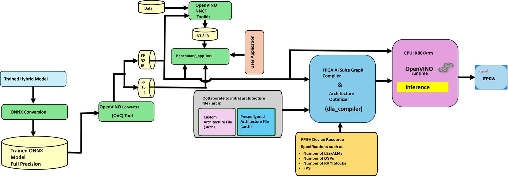

Check one article
Batch of 32 articles: speed on this device
Press the button to draw 32 random articles from the ISOT test split, which the model never saw during training. They go through the model as one batch, which is the same setup as our CPU benchmark.
| # | Article (start) | True label | Model says | P(fake) |
|---|
Our CPU benchmark (batch of 32)
Measured once in Python on one laptop, mean latency per batch of 32 articles, using the same pre-tokenised inputs for every runtime. Lower latency and higher throughput are better.
Setup: Intel Core i5-1135G7 (11th Gen, 8 threads), 8 GB RAM, Windows 11, OpenVINO 2024.6. OpenVINO FP16 is the fastest at about 1.56× PyTorch; OpenVINO FP32 is 1.43× and ONNX Runtime 1.37×.
Your browser row uses ONNX Runtime Web (WebAssembly) on your own device. It is a different runtime and a different machine, so use it to see how the same model behaves on your hardware, not as an OpenVINO comparison.
About the model
- Embedding (10,000 × 100) → BiLSTM (100 per direction) → scaled self-attention → masked mean pooling → Dropout 0.3 → Linear (200, 1).
- 1.16 million parameters. ONNX file: 4.44 MB.
- Trained in PyTorch on ISOT (39,103 articles after removing duplicates), 70/15/15 split, sequence length 300.
| Test metric (5,866 articles) | Value |
|---|---|
| Accuracy | 99.25% |
| Precision | 99.44% |
| Sensitivity (recall) | 98.92% |
| Specificity | 99.53% |
| F1-score | 99.18% |
Where this fits

Done: model training → ONNX → OpenVINO (CPU). Future work: the Intel FPGA AI Suite stage and the Agilex 7 FPGA board. This page runs the ONNX stage in the browser.
Read this before quoting the numbers
- ISOT articles carry strong style cues (for example agency bylines in genuine articles). A high score on ISOT does not mean the model will catch fake news from other sources.
- Speed on this page depends on your device, browser and whether it can use several threads. Compare devices with each other, not with the CPU table.
- Latency is per batch of 32 articles. Per-article time is that number divided by 32.
- Tokenising the text is done before timing starts, so the numbers cover model inference only.